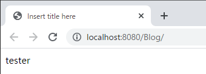
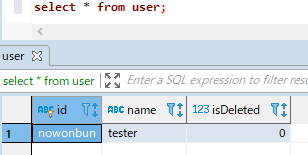
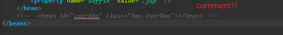
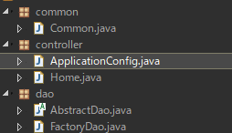
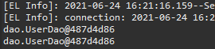

[Java] 52. SpringフレームワークでDAOをFactory method Patternを利用して依存性注入する方法
こんにちは。明月です。
この投稿はSpringフレームワークでDAOをFactory method Patternを利用して依存性注入する方法に関する説明です。
以前の投稿でSpringフレームワークでJPA ORMのDAOを@Autowiredのアトリビュートを使って依存性注入する方法に関する説明しました。
link - [Java] 51. SpringフレームワークでJPAを使い方(依存性注入@Autowired)
Spring ControllerにはDAOを取得してJPA ORMを利用してデータを取得する部分に関しては問題ありません。
でも、問題はSpring ControllerではないクラスでDAOを取得する方法が問題です。もちろん、一般クラスでただDAOクラスのインスタンスを生成(new)して使っても問題ありません。
しかし、Springで依存性注入でSingleton形式で使うのに、他の一般クラスで一般インスタンス生成してデータベースに接続してデータを取得することではなく、同じSingletonパターンで取得して使いたいです。
そのため、DAOクラスを制御するFactory method patternを先に作成することが必要です。
package dao;
import java.lang.reflect.Constructor;
import java.util.HashMap;
import java.util.Map;
public class FactoryDao {
// FactoryDaoクラスのsingletonパターンのインスタンス変数
private static FactoryDao instance = null;
// Daoクラスのインスタンスを格納するflyweightパターンのマップ
private final Map<Class<?>, AbstractDao<?>> flyweight;
// Singletonパターンを守るためにコンストラクタをprivateタイプに設定
private FactoryDao() {
// flyweightパターンのマップのインスタンス生成
flyweight = new HashMap<Class<?>, AbstractDao<?>>();
}
@SuppressWarnings("unchecked")
// DAOインスタンスを取得するためのSingletonパターンの関数
public static <T> T getDao(Class<T> clz) {
try {
// FactoryDaoのインスタンスがなければ生成する。
if (instance == null) {
// インスタンス生成
instance = new FactoryDao();
}
// FactoryDaoのflyweightマップでパラメータのクラスタイプのDAOが存在しない場合
if (!instance.flyweight.containsKey(clz)) {
// Reflection機能でコンストラクタを探す
Constructor<T> constructor = clz.getDeclaredConstructor();
// アクセス修飾子に関係せず、アクセス可能にする設定
constructor.setAccessible(true);
// flyweightのマップにクラスタイプをキーに設定してインスタンスを格納する。
instance.flyweight.put(clz, (AbstractDao<?>) constructor.newInstance());
}
// flyweightのマップに格納されたDAOインスタンスをリターンする。
return (T) instance.flyweight.get(clz);
} catch (Throwable e) {
// エラーが発生
throw new RuntimeException(e);
}
}
}
上のソースはFactoryDaoクラスをSingletonパターンタイプで作成しました。つまり、プログラムが開始してFactoryDaoのインスタンスはただ一つだけ生成されます。
そしてgetDaoはFactory method patternです。つまり、パラメータのクラスタイプによりインスタンスを取得します。
しかし我々がDAOのインスタンスを生成するたびにFactoryDaoでifやswitchの分岐文を作成することが大変なので、パラメータのクラスタイプでReflectionを利用してインスタンスを生成するflyweight patternを適用しました。
つまり、改めてまとめたらSingleton + Factory method + flyweightパターンの結果です。
じゃ、SpringのController部分ではなく、一般クラスの関数部分でDAOを取得して使いましょう。
package dao;
import java.util.List;
import javax.persistence.NoResultException;
import javax.persistence.Query;
import model.User;
// UserデータのDaoクラス、AbstractDaoを継承してジェネリックタイプはUserクラスを設定する。
public class UserDao extends AbstractDao<User> {
// コンストラクタの再定義、protectedからpublicに変更してパラメータを再設定する。
private UserDao() {
// protectedコンストラクタを呼び出す。
super(User.class);
}
// Idによるデータを取得
public User selectById(String id) {
// AbstractDao抽象クラスのtransaction関数を使う。
return super.transaction((em) -> {
// クエリを作成する。(実務ではcreateQueryではなく、createNamedQueryを使ってEntityでクエリを管理する。)
Query query = em.createQuery("select u from User u where u.id = :id");
// パラメータ設定
query.setParameter("id", id);
try {
// 結果リターン
return (User) query.getSingleResult();
} catch (NoResultException e) {
// データがなしでエラーが発生するとnullでリターン
return null;
}
});
}
}
package common;
import dao.FactoryDao;
import dao.UserDao;
import model.User;
// 一般クラス
public class Common {
// idのパラメータを受け取ってUserの名前値をリターンする関数
public String getUserNameById(String id) {
// FactoryDaoでUserDaoのインスタンスを取得する。
UserDao userdao = FactoryDao.getDao(UserDao.class);
// UserDaoクラスのselectById関数を利用してUser Entityを取得する。
User user = userdao.selectById(id);
// 名前の値をリターンする。
return user.getName();
}
}
じゃ、ControllerでCommonクラスのgetUserNameById関数を利用しましょう。
package controller;
import javax.servlet.http.HttpServletRequest;
import javax.servlet.http.HttpServletResponse;
import javax.servlet.http.HttpSession;
import org.springframework.stereotype.Controller;
import org.springframework.ui.ModelMap;
import org.springframework.web.bind.annotation.RequestMapping;
import common.Common;
@Controller
public class Home {
// 要請urlパターン
@RequestMapping(value = "/index.html")
public String index(ModelMap modelmap, HttpSession session, HttpServletRequest req, HttpServletResponse res) {
// Commonクラスのインスタンスを生成
Common common = new Common();
// modelmapにCommonクラスのgetUserNameById関数を利用してNameを取得する。
modelmap.addAttribute("Data", common.getUserNameById("nowonbun"));
// viewのファイル名
return "index";
}
}


上の結果をみればCommonクラス中でUserDaoを利用してデータベースに接続してデータを取得して画面に表示することが確認できます。
ここまでSpringフレームワークの一般クラスでDAOインスタンスをFactory patternを利用して取得することが確認できました。
これからFactoryDaoにあるDAOインスタンスを@Autowiredを通ってControllerで依存性注入してインスタンスを取得しなければならないです。
以前には我々がbeanをmvc-config.xmlで登録しましたが、ここにはxmlで登録することではなく、クラスで設定します。

package controller;
import org.springframework.context.annotation.Bean;
import org.springframework.context.annotation.Configuration;
import dao.FactoryDao;
import dao.UserDao;
// 設定アトリビュート
@Configuration
public class ApplicationConfig {
// Bean設定、idはUserDao
@Bean(name = "UserDao")
public UserDao getUserDao() {
// FactoryDaoのUserDaoのインスタンスを取得する。
return FactoryDao.getDao(UserDao.class);
}
}
上のApplicationConfigクラスはxmlで設定されたControllerパッケージに作成します。

そして@Configurationアトリビュートを設定してxmlで使ったbean-idをBeanアトリビュートで設定しましょう。
じゃ、またControllerで依存性注入でDAOを取得しましょう。
package controller;
import javax.servlet.http.HttpServletRequest;
import javax.servlet.http.HttpServletResponse;
import javax.servlet.http.HttpSession;
import org.springframework.beans.factory.annotation.Autowired;
import org.springframework.beans.factory.annotation.Qualifier;
import org.springframework.stereotype.Controller;
import org.springframework.ui.ModelMap;
import org.springframework.web.bind.annotation.RequestMapping;
import dao.FactoryDao;
import dao.UserDao;
@Controller
public class Home {
// 依存性注入
@Autowired
// ApplicationConfigクラスで設定したbean-id
@Qualifier("UserDao")
private UserDao userdao;
// 要請urlパターン
@RequestMapping(value = "/index.html")
public String index(ModelMap modelmap, HttpSession session, HttpServletRequest req, HttpServletResponse res) {
// 依存性注入で受け取ったUserDaoインスタンスのメモリアドレス
System.out.println(userdao);
// FactoryDaoで受け取ったUserDaoインスタンスのメモリアドレス
System.out.println(FactoryDao.getDao(UserDao.class));
// 依存性注入で受け取ったUserDaoのインスタンスでデータ取得
modelmap.addAttribute("Data", userdao.selectById("nowonbun").getName());
// viewのファイル名
return "index";
}
}
依存性注入でもUserDaoを利用してもデータベースの値を正しく取得します。

コンソール出力でFactoryDaoから取得したUserDaoインスタンスと依存性注入から取得したUserDaoインスタンスのメモリアドレスが同じです。
つまり、同じインスタンスだという意味です。
このように作成すればFactoryDaoを通ってSpringの依存性注入したDAOと一般クラスで使ったDAOは一つで統一が可能です。
そして、実はここで一つの作業をもっと進めなければならないです。それはDAOのコンストラクタのアクセス修飾子のタイプをすべてprivateに修正しなければならないです。
FactoryDaoクラスをみればアクセス修飾子と関係せずにインスタンスを生成するライン(constructor.setAccessible(true))があります。
つまり、DAOクラスのコンストラクタをprivateに設定してもFactoryDaoには問題なく、インスタンス生成が可能という意味です。
そしてDAOのコンストラクタのアクセス修飾子をprivateに設定すれば他のクラスでDAOのインスタンスを生成(new)することができなくなります。
ここまでするとプロジェクト開始準備が完了します。
ここまでSpringフレームワークでDAOをFactory method Patternを利用して依存性注入する方法に関する説明でした。
ご不明なところや間違いところがあればコメントしてください。
- [Java] 59. Spring bootのJPAでEntityManagerを使い方2022/02/25 18:27:48
- [Java] 58. EclipseでSpring bootのJPAを設定する方法2022/02/23 18:11:10
- [Java] 57. EclipseでSpring bootを設定する方法2022/02/22 19:04:49
- [Java] 56. Web serviceのサーブレット(Servlet)で初期化作業(properties設定)2021/07/02 17:10:36
- [Java] 55. Spring frameworkに文字化けを解決する方法(Encoding設定)2021/06/30 16:37:16
- [Java] 54. Spring frameworkでWeb filterを使う方法2021/06/29 18:25:12
- [Java] 53. ウェブサービス(Web service)でエラーページを処理する方法2021/06/25 13:35:54
- [Java] 52. SpringフレームワークでDAOをFactory method Patternを利用して依存性注入する方法2019/10/17 07:15:48
- [Java] 51. SpringフレームワークでJPAを使い方(依存性注入@Autowired)2019/10/16 07:32:55
- [Java] 50. JPAプロジェクトでDAOクラスを作成する方法2019/10/15 20:12:35
- [Java] 49. JPAでトランザクション(transaction)を扱う方法と共通関数作成する方法(Observerパターン)2019/10/14 20:13:44
- [Java] 48. JPAでQueryを使う方法(JPQLクエリを作成する方法)2019/10/13 22:55:52
- [Java] 47. JPAのEntityクラスのリファレンス設定(cascade, fetch)2019/10/13 00:40:08
- [Java] 46. JPAのEntityクラスの基本設定(@GeneratedValue、 @ManyToMany)2019/10/11 07:30:14
- [Java] 45. JPAを設定する方法2019/10/10 07:29:43
- [Java] 64.Spring bootとReactを連結する方法(Buildする方法)2022/03/25 21:02:18
- [Javascript] Node.jsをインストールしてReactを使う方法2022/03/23 18:01:34
- [Java] 63. Spring bootでcronスケジューラとComponentアノテーション2022/03/16 18:57:30
- [Java] 62. Spring bootでWeb-Filterを設定する方法(Spring Security)2022/03/15 22:16:37
- [Java] JWT(Json Web Token)を発行、確認する方法2022/03/14 19:12:58
- [Java] 61. Spring bootでRedisデータベースを利用してセッションクラスタリング設定する方法2022/03/01 18:20:52
- [Java] 60. Spring bootでApacheの連結とロードバランシングを設定する方法2022/02/28 18:45:48
- [Java] 59. Spring bootのJPAでEntityManagerを使い方2022/02/25 18:27:48
- [Java] 58. EclipseでSpring bootのJPAを設定する方法2022/02/23 18:11:10
- [Java] 57. EclipseでSpring bootを設定する方法2022/02/22 19:04:49
- [Python] Redisデータベースに接続して使い方2022/02/21 18:23:49
- [Java] Redisデータベースを接続して使い方(Jedisライブラリ)2022/02/16 18:13:17
- [C#] Redisのデータベースを接続して使い方2022/02/15 18:46:09
- [CentOS] Redisデータベースをインストールする方法とコマンドを使い方2022/02/14 18:33:07
- [Design pattern] 3-6. ステートパターン(State pattern)2021/11/17 20:04:47